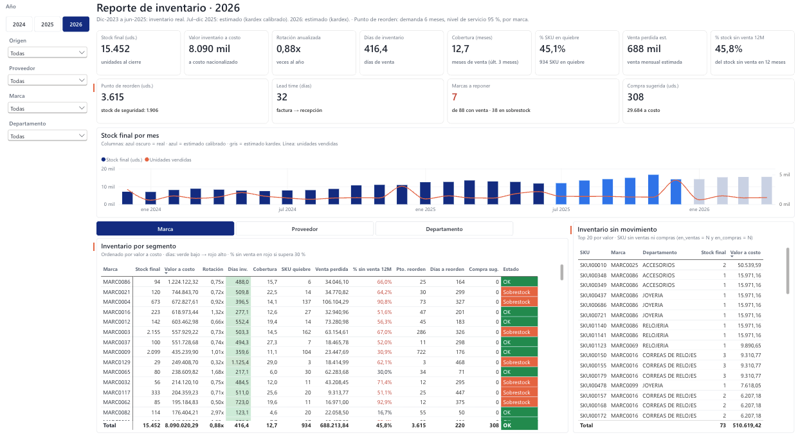

Sell In / Sell Out en retail de lujo
Modelo estrella en Power BI con ventas, compras e inventario anonimizados. Inventario reconstruido, punto de reorden por marca y pronóstico probado contra la realidad.
Python · Power BI · DAX · Power Query
Ver el caso completo